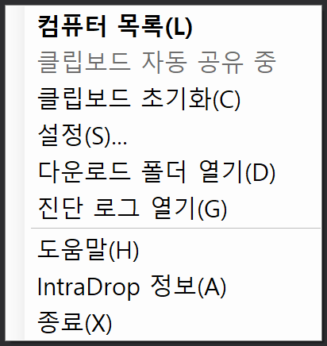
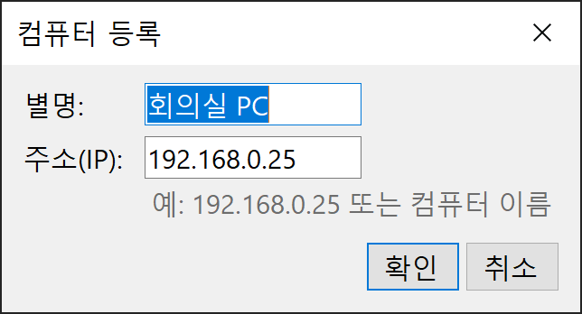
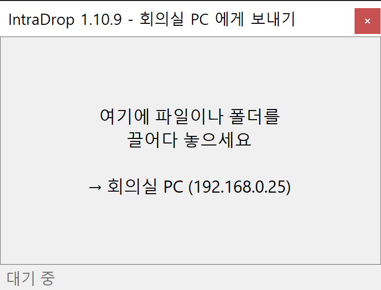
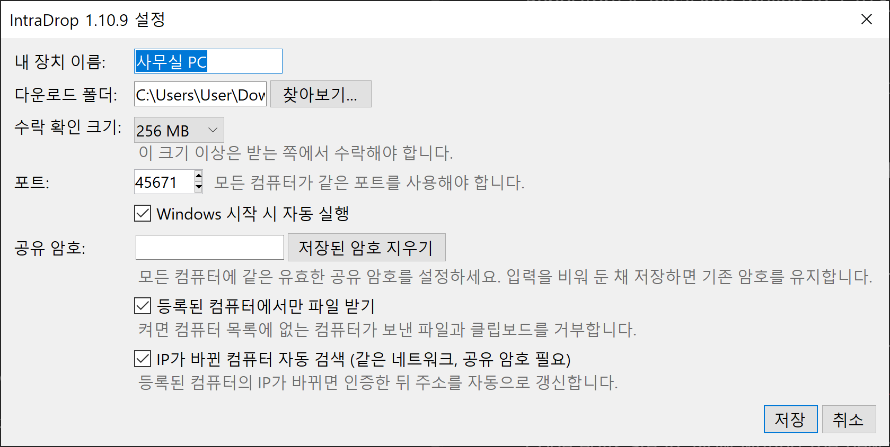

한눈에 보기
IntraDrop은 작업 표시줄 오른쪽 알림 영역(트레이)에 아이콘으로만 떠 있습니다. 아이콘이 보이지 않으면 알림 영역의 ∧(숨겨진 아이콘 표시)를 누르세요.
| 하고 싶은 일 | 이렇게 하세요 |
|---|---|
| 컴퓨터 목록 열기 | 트레이 아이콘을 더블클릭합니다. |
| 파일·폴더 보내기 | 컴퓨터 목록에서 대상을 더블클릭하고 보내기 창에 끌어다 놓습니다. 또는 탐색기에서 우클릭 → 보내기 → IntraDrop - 컴퓨터 이름 |
| 글·그림 보내기 | 그냥 Ctrl+C. 등록된 모든 컴퓨터에 자동으로 전달되고, 상대 컴퓨터에서 Ctrl+V로 붙여넣습니다. |
| 받은 파일 찾기 | 수신 알림 풍선을 클릭하거나 트레이 아이콘 우클릭 → 다운로드 폴더 열기 |
| 설정·도움말·종료 | 트레이 아이콘을 우클릭합니다. |

1. 시작 전 준비
모든 컴퓨터에 설치
파일을 주고받을 컴퓨터 모두에 IntraDrop을 설치하고 실행합니다. Windows 10/11용과 Windows 7용 설치 파일이 따로 있지만 서로 주고받을 수 있습니다. 모든 컴퓨터를 같은 버전으로 맞추세요. 버전이 다른 컴퓨터는 목록에 업데이트 필요로 표시되고 주고받을 수 없습니다.
같은 네트워크에 연결
사내망·가정망처럼 서로 연결되는 네트워크여야 합니다. 손님용 Wi-Fi나 격리된 네트워크에서는 컴퓨터끼리 통신이 막힐 수 있습니다.
Windows 방화벽 허용
처음 실행할 때 방화벽 허용 창이 뜨면 개인 네트워크에 체크하고 액세스 허용을 누릅니다. 기본 포트는 TCP 45671이며 모든 컴퓨터가 같은 포트를 써야 합니다.
(권장) 공유 암호 정하기
트레이 아이콘 우클릭 → 설정의 공유 암호에 모든 컴퓨터에서 같은 암호를 넣으면 전송이 암호화되고 상대를 인증합니다. 암호가 없으면 암호화 없이 보내므로 믿을 수 있는 사내망에서만 쓰세요.
2. 컴퓨터 등록
보낼 상대 컴퓨터를 한 번만 등록하면 됩니다. 상대 컴퓨터에서 IntraDrop이 실행 중이고 포트·공유 암호가 맞으면, 상대 컴퓨터의 목록에도 내 컴퓨터가 자동으로 등록되므로 한쪽에서만 등록해도 됩니다.
상대 컴퓨터의 주소를 확인합니다. 상대 컴퓨터에서 트레이 아이콘을 더블클릭해 컴퓨터 목록을 열면 창 위쪽에 내 컴퓨터: 이름 · IP 192.168.x.x가 표시됩니다. 이 IP 주소(또는 Windows 컴퓨터 이름)를 받아 적습니다.
내 컴퓨터에서 트레이 아이콘을 더블클릭해 컴퓨터 목록을 열고 추가를 누릅니다.
별명에는 알아보기 쉬운 이름을, 주소(IP)에는 1에서 확인한 주소를 입력하고 확인을 누릅니다.

상대 컴퓨터의 IP가 바뀌었을 때
- 공유 암호를 쓰고 있으면 바뀐 주소를 자동으로 찾아 갱신합니다. 프로그램이 시작될 때 등록된 컴퓨터에 자기 IP를 직접 알리고, 같은 네트워크에서는 자동 검색도 합니다.
- 공유 암호가 없으면 자동 갱신이 되지 않습니다. 항목을 선택하고 수정으로 새 IP를 입력하세요.
- 같은 컴퓨터가 두 줄로 보이면(옛 IP 항목 + 새 항목) 옛 항목을 선택하고 수정 → 현재 IP 입력 → "같은 컴퓨터인가요?"에 예를 누르세요. 인증이 끝나면 기존 별명으로 한 항목으로 합쳐집니다.
3. 파일·폴더 보내기
방법 A — 보내기 창에 끌어다 놓기
- 컴퓨터 목록에서 대상을 더블클릭하거나 선택한 뒤 보내기 창을 누릅니다. 화면 오른쪽 아래에 작은 창이 열리고 항상 위에 떠 있습니다.
- 탐색기에서 파일이나 폴더를 그 창으로 끌어다 놓습니다. 여러 개를 한꺼번에 놓아도 되고, 전송 중에 더 놓으면 순서대로 보냅니다.
- 아래 상태 줄에서 연결 중 → 보내는 중 (진행률) → 완료를 확인합니다. 실패하면 이유가 빨간 글씨로 표시됩니다.

방법 B — 탐색기 우클릭 메뉴
- 탐색기에서 보낼 파일·폴더를 선택하고 우클릭합니다. Windows 11에서는 먼저 추가 옵션 표시를 누릅니다.
- 보내기 → IntraDrop - 컴퓨터 이름을 선택합니다. 예: IntraDrop - 회의실 PC
등록된 컴퓨터마다 메뉴 항목이 하나씩 생깁니다. 다운로드한 설치 파일(.exe)도 실행되지 않고 그대로 전송되며, 문제가 생기면 메시지 창으로 알려 줍니다.
알아 두세요
- 폴더는 안쪽 구조 그대로 전달됩니다.
- 다른 프로그램에서 열어 둔 파일(편집 중인 엑셀 파일 등)은 마지막으로 저장한 내용을 보내고, 보내는 쪽에 "열린 파일의 복사본을 보냅니다" 풍선이 한 번 뜹니다. 방금 고친 내용까지 보내려면 먼저 저장하세요. 다른 프로그램이 읽기까지 막고 있으면 그 파일을 닫은 뒤 다시 보내세요.
- 큰 전송(상대 설정의 수락 확인 크기 이상, 기본 256MB)은 상대가 60초 안에 수락해야 시작됩니다. 거절하거나 시간이 지나면 "상대방이 수신을 거절했습니다"로 끝납니다.
- 보내기만 할 수 있습니다. 상대 컴퓨터의 파일을 가져오는 기능은 없습니다.
4. 파일 받기
- IntraDrop이 실행 중이면 따로 할 일이 없습니다. 파일이 도착하면 파일 수신 완료 풍선이 뜨고, 풍선을 클릭하면 받은 폴더가 열립니다.
- 저장 위치는 설정의 다운로드 폴더(기본값
다운로드\IntraDrop)입니다. 트레이 메뉴의 다운로드 폴더 열기로 언제든 열 수 있습니다. - 같은 이름의 파일이 이미 있으면
이름 (2).확장자처럼 번호를 붙여 저장합니다. 기존 파일을 덮어쓰지 않습니다. - 큰 전송은 "○○ 님이 큰 파일을 보내려고 합니다" 창이 뜹니다. 수락하면 받기 시작하고, 거절하거나 60초가 지나면 받지 않습니다. 기준 크기는 설정의 수락 확인 크기(256MB / 512MB / 1GB)로 바꿉니다.
- 디스크 여유 공간이 모자라면 자동으로 거절하고 알려 줍니다.
- 모르는 컴퓨터가 보내는 것을 막으려면 설정에서 등록된 컴퓨터에서만 파일 받기를 켜세요.
5. 클립보드 자동 공유
글이나 그림을 복사하면 등록된 모든 컴퓨터에 자동으로 전달됩니다. 대상을 고르거나 버튼을 누를 필요가 없습니다.
- 보낼 글·그림을 Ctrl+C로 복사합니다.
- 잠시 기다립니다. 성공할 때마다 알림을 띄우지는 않으며, 트레이 메뉴 두 번째 줄에서 상태를 볼 수 있습니다.
- 상대 컴퓨터의 원하는 프로그램에서 Ctrl+V로 붙여넣습니다.
무엇이 공유되나요
| 복사한 것 | 자동 공유 |
|---|---|
| 글(텍스트) | 됩니다. 한글·여러 줄·이모지 포함 일반 텍스트, 1MB까지. 글꼴·색 같은 서식은 빠지고 글자만 전달됩니다. |
| 그림(이미지) | 됩니다. 화면 캡처나 그림판 등에서 복사한 비트맵, PNG 기준 16MB·2,500만 픽셀까지. |
| 파일·폴더 (Ctrl+C/X) | 안 됩니다. 내 컴퓨터 안에서만 복사·잘라내기가 됩니다. 다른 컴퓨터로 보내려면 3절의 보내기 창이나 탐색기 보내기 메뉴를 쓰세요. |
| 프로그램 전용 개체 | 안 됩니다. Outlook 첨부 파일, 앱 전용 OLE 개체 등은 파일로 저장한 뒤 파일로 보내세요. |
| 다른 컴퓨터에서 받은 내용 | 다시 보내지 않습니다. 돌고 도는 일이 없습니다. |
상태 줄 읽는 법
트레이 아이콘 우클릭 메뉴의 두 번째 줄입니다. 마우스를 올리면 자세한 이유가 보입니다.
| 표시 | 뜻 |
|---|---|
| 클립보드 자동 공유 중 | 정상입니다. |
| 클립보드 자동 공유 (등록된 컴퓨터 없음) | 보낼 곳이 없습니다. 2절대로 컴퓨터를 등록하세요. |
| 클립보드 자동 공유 (전송 실패) | 마지막 전송이 한 컴퓨터 이상에서 실패했습니다. 상대가 꺼져 있거나 공유 암호가 다른 경우가 대부분입니다. 다음에 복사하면 다시 시도합니다. |
| 클립보드 자동 공유 (되돌이 감지) | 아래 "Excel 복사가 풀릴 때"를 보세요. |
| 클립보드 초기화 완료 | 방금 클립보드를 비웠습니다. 다음 복사부터 다시 공유합니다. |
클립보드 초기화
트레이 아이콘 우클릭 → 클립보드 초기화는 이 컴퓨터의 클립보드를 비우고, 아직 보내지 않은 내용과 적용을 기다리던 수신 내용을 취소합니다. 비밀번호 같은 민감한 내용을 복사한 뒤 지우고 싶을 때, 또는 공유가 꼬인 것 같을 때 누르세요. 원본 파일, 다른 컴퓨터의 클립보드, Windows 클립보드 기록(Win+V)은 건드리지 않습니다.
Excel·Word·PowerPoint를 쓰는 중이라면
- 받는 컴퓨터가 Excel에서 메뉴를 열어 두었거나, 셀을 편집 중이거나, 복사·잘라내기(점선 테두리) 상태이면 다른 컴퓨터에서 온 내용을 적용하지 않습니다. 작업을 방해하지 않기 위해서이며, 이때 건너뛴 내용은 나중에도 적용되지 않습니다. 그쪽 작업이 끝난 뒤 보내는 컴퓨터에서 다시 복사하세요.
- 보내는 컴퓨터에서 Office 메뉴·셀 편집·마우스 버튼이나 Ctrl을 누르고 있는 동안에는 읽기를 잠시 미루었다가, 조작이 끝나면 한 번만 읽어 보냅니다.
Excel 복사가 바로 풀리거나 우클릭 메뉴가 닫힐 때
VNC·원격 데스크톱·클립보드 동기화 프로그램의 클립보드 공유가 켜져 있으면, IntraDrop이 상대 컴퓨터에 전달한 내용이 그 프로그램을 타고 이 컴퓨터로 되돌아와 Excel의 복사 상태를 풀고 열린 메뉴를 닫습니다. IntraDrop은 이를 감지하면 다시 보내지 않고 상태를 (되돌이 감지)로 바꾸며, 어느 프로그램이 되돌려 썼는지 풍선으로 한 번 알려 줍니다. 클립보드는 IntraDrop이 공유하므로 그 프로그램의 클립보드 공유 기능은 끄세요.
진단 로그
트레이 아이콘 우클릭 → 진단 로그 열기를 누르면 %APPDATA%\IntraDrop\clipboard.log를 탐색기에서 보여 줍니다. 클립보드가 언제 바뀌었고 어느 프로그램이 썼으며 왜 보내거나 건너뛰었는지가 적혀 있고, 복사한 내용 자체는 기록하지 않습니다. 4MB를 넘으면 clipboard.log.1로 한 번 보관합니다. 문제를 문의할 때 이 파일을 함께 보내 주세요.
6. 설정
트레이 아이콘 우클릭 → 설정에서 바꿉니다. 저장을 누르면 바로 적용됩니다.

| 항목 | 설명 |
|---|---|
| 내 장치 이름 | 상대 컴퓨터의 목록과 알림에 보이는 내 이름입니다. 비워 두면 Windows 컴퓨터 이름을 씁니다. |
| 다운로드 폴더 | 받은 파일을 저장할 곳입니다. |
| 수락 확인 크기 | 이 크기 이상(256MB / 512MB / 1GB)의 전송은 받기 전에 수락 창을 띄웁니다. |
| 포트 | 기본 45671. 바꾸면 모든 컴퓨터에서 같은 값으로 바꾸고 방화벽도 확인하세요. |
| Windows 시작 시 자동 실행 | 로그인하면 IntraDrop이 자동으로 켜집니다. 설치할 때 고른 값이 처음에 반영됩니다. |
| 공유 암호 | 모든 컴퓨터에 같은 암호를 넣으면 AES-256 암호화와 상대 인증이 켜집니다. 입력란을 비운 채 저장하면 기존 암호가 그대로 유지되고, 암호를 없애려면 저장된 암호 지우기를 누르세요. 암호는 이 Windows 계정만 읽을 수 있게 보호되어 저장됩니다. |
| 등록된 컴퓨터에서만 파일 받기 | 컴퓨터 목록에 없는 컴퓨터가 보낸 파일과 클립보드를 거부합니다. |
| IP가 바뀐 컴퓨터 자동 검색 | 같은 네트워크에서 IP가 바뀐 등록 컴퓨터를 찾아 인증한 뒤 주소를 갱신합니다. 공유 암호가 필요합니다. 꺼도 프로그램 시작 시 등록된 컴퓨터에 내 IP를 알리는 동작은 계속합니다. |
7. 문제 해결
| 증상 | 확인할 것 |
|---|---|
| 목록에서 오프라인으로 보임 "…에 연결할 수 없습니다" | ① 상대 컴퓨터에서 IntraDrop이 실행 중인지 ② 등록한 주소가 상대의 현재 IP인지(바뀌었으면 수정) ③ 양쪽 포트가 같은지 ④ 방화벽에서 개인 네트워크 허용인지 ⑤ 같은 네트워크인지(손님용 Wi-Fi·VLAN·클라이언트 격리는 차단). 확인 후 새로고침. |
| "공유 암호가 일치하지 않습니다" "상대방이 공유 암호를 요구합니다" "상대방에게는 공유 암호가 설정되어 있지 않습니다" | 양쪽 설정의 공유 암호를 똑같이 맞추거나 양쪽 모두 지우세요. |
| "상대방의 허용 목록에 이 컴퓨터가 없습니다" | 상대 컴퓨터가 등록된 컴퓨터에서만 파일 받기를 켜 두었습니다. 상대 컴퓨터의 목록에 내 컴퓨터를 등록하게 하세요. |
| "저장된 공유 암호를 복호화할 수 없습니다" | 설정에서 새 암호를 입력하거나 저장된 암호 지우기를 누르세요 (6절 경고 참고). |
| 시작할 때 "포트 … 을(를) 열 수 없습니다" | 다른 프로그램이 그 포트를 쓰고 있습니다. 설정에서 포트를 바꾸고 모든 컴퓨터를 같은 값으로 맞추세요. |
| 복사했는데 상대 컴퓨터에 붙여넣기가 안 됨 | 트레이 메뉴 상태 줄을 확인하세요. 파일·폴더와 프로그램 전용 개체는 자동 공유 대상이 아닙니다. 상대가 Excel 작업 중이면 끝난 뒤 다시 복사하세요. 양쪽 모두 최신 버전인지도 확인하세요. |
| Excel 복사가 바로 풀리거나 우클릭 메뉴가 닫힘 | 5절 "Excel 복사가 바로 풀릴 때"대로 VNC·원격 데스크톱·클립보드 동기화 프로그램의 클립보드 공유를 끄세요. 계속되면 진단 로그를 확인하세요. |
| 탐색기 보내기 메뉴에 컴퓨터가 없음 | 컴퓨터 목록 창을 열어 새로고침하거나 IntraDrop을 다시 실행하면 메뉴가 다시 만들어집니다. Windows 11은 추가 옵션 표시 안에 있습니다. |
| 목록에 "업데이트 필요"로 보임 | 그 컴퓨터의 IntraDrop이 이전 버전입니다. 같은 설치 파일로 업데이트하면 다시 온라인으로 바뀝니다. 1.11.0부터는 이전 버전과 파일·클립보드를 주고받을 수 없습니다. |
| 같은 컴퓨터가 두 개로 보임 | 2절 "상대 컴퓨터의 IP가 바뀌었을 때"대로 옛 항목을 수정해 합치세요. |
제거
Windows 설정 → 앱(또는 제어판 → 프로그램 제거)에서 IntraDrop을 제거하면 탐색기 보내기 메뉴 항목과 자동 실행 등록도 함께 지워집니다. 설정 파일은 %APPDATA%\IntraDrop에 남으므로 완전히 지우려면 이 폴더를 삭제하세요.